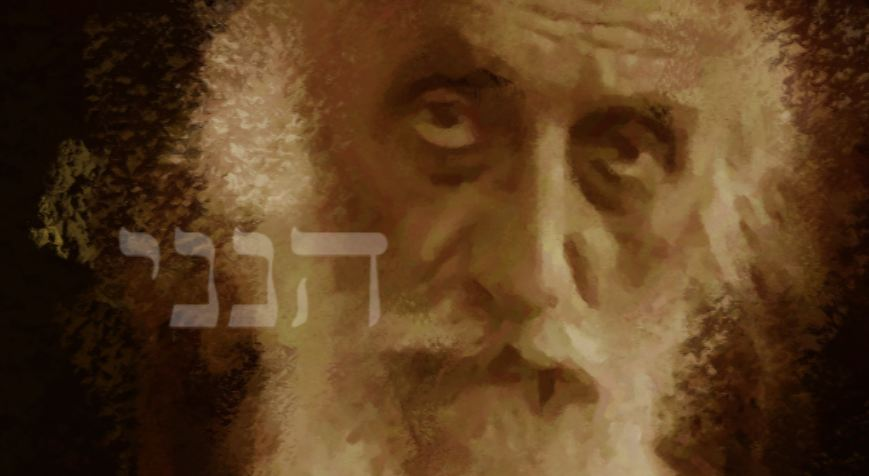
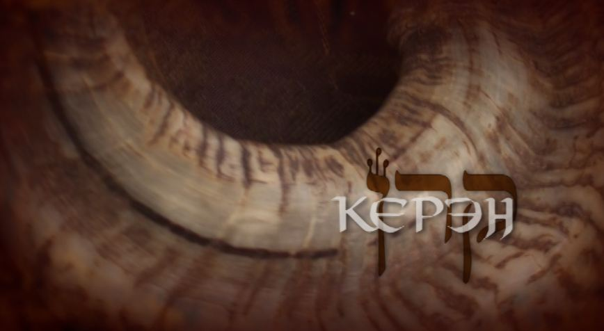
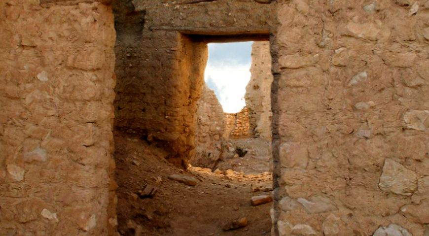
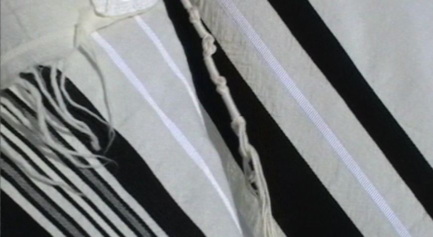
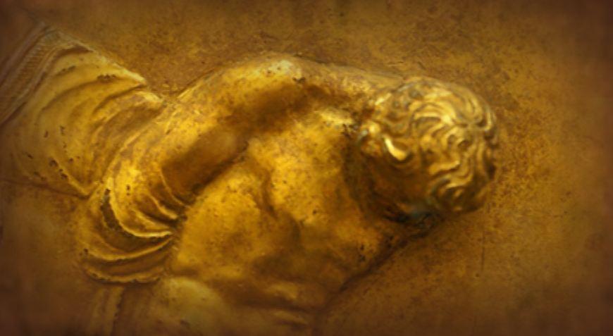
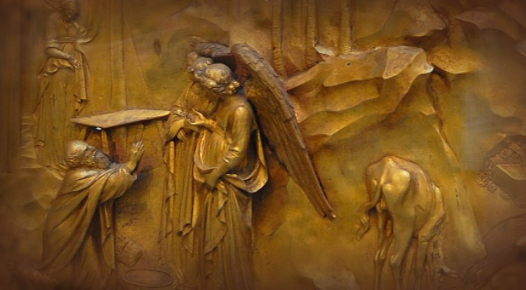
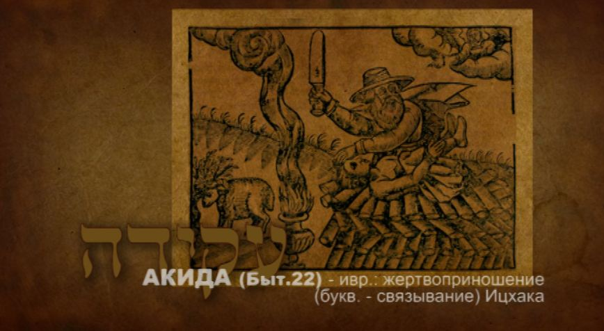

Арт-мидраш · Праздники в Библии
ГОЛОС ШОФАРА ч.2. Призвание
Рог жертвенного животного имеет три имени. Каждое из них несет в себе особое послание от Всевышнего. Каждое - несет в себе особенное совершенное действие. Мы говорили об этом в предыдущей части "Высокое предназначение".
Призвание от Призывающего.




Древнейший из используемых ныне музыкальных инструментов – шофар ведет своё родословие от событий, связанных с отцом нашим Авраамом. Еврейская традиция называет это повествование Торы - «Акида», на русском языке известное под названием «жертвоприношение Исаака». (Акида - ивр. связывание. Т.к. связыванию был подвержен Ицхак прежде, чем Авраам возложил его на жертвенник).
Недельное чтение Торы «Акида» особенно важно для понимания сути и глубокого раскрытия первого из имён Шофара – «Керен» (всего их, как мы уже сказали, три: «керен», «шофар», «йовель»). Именно в этой главе мы находим самое первое в Библии упоминание слова керен. Впоследствии этот рог (Керен) станет музыкальным инструментом, полным символического значения, пронзающим своим голосом оба Завета.
Речь идет о роге барана, которого усмотрел Себе Бог, и которого Авраам принес во всесожжение вместо Ицхака.



(Быт.22:1-11)
1. И было, после этих событий Бог испытал Авраама, и сказал ему:
2. Авраам! И он сказал: вот я! И Он сказал: прошу, возьми сына твоего, единственного твоего, которого ты любишь, Ицхака; и пойди в землю Мориа, и принеси его там во всесожжение на одной из гор, о которой Я скажу тебе.
3. И встал Авраам рано утром, оседлал осла своего и взял с собою двух отроков своих и Ицхака, сына своего, и наколол дров для всесожжения, и встал, и пошел на место, о котором сказал ему Бог.
4. На третий день возвел Авраам очи свои и увидел то место издалека.
7. И сказал Ицхак Аврааму, отцу своему, говоря: отец мой! И он сказал: вот я, сын мой! И он сказал: вот огонь и дрова, где же агнец для всесожжения?
8. И сказал Авраам: Бог усмотрит Себе агнца для всесожжения, сын мой. И пошли оба вместе.
9. И пришли на место, о котором сказал ему Бог; и устроил там Авраам жертвенник, и разложил дрова, и связал Ицхака, сына своего, и положил его на жертвенник поверх дров.
10. И простер Авраам руку свою, и взял нож, чтобы зарезать сына своего. 11 Но воззвал к нему ангел Господень с неба и сказал: Авраам! Авраам! И он сказал: вот я… (перевод Давида Иосифона)
Призвание от Призывающего
Самидесяти лет был Аврам, когда Всевышний вызвал его из Харрана (Быт.12:1-4).
И дал Господь отцу нашему новое имя Авраам, что значит - отец множества народов, имя, несущее в себе предназначение и указание, как оно должно воплотиться в жизнь – через чудесное отцовство.
Так Предвечный открыл Аврааму вечное призвание; великое предназначение возложил на него и его потомков - быть благословением для всех народов. Возможно, именно тогда Авраам услышал в сердце своём призывный звук рога (керен).
Мы приходим в этот мир, чтобы исполнить своё призвание, но человек не может призвать себя сам, он может либо согласиться, либо не согласиться с призванием, которое определил ему Всевышний.
Часто, не задумываясь, мы отделяем призвание от Призывающего, творение от его Творца. И нередко так сильно увлекаемся своим предназначением (каким бы оно ни было высоким), что оставляем в стороне, или вовсе забываем Того, кто сотворил, призвал нас к жизни и без кого наше призвание не имеет смысла.
Только Бог способен дать человеку, мудрость, ведение, разумение и таланты. Только Он обладает способностью провидеть, и учесть всё необходимое, чтобы мы были в состоянии реализовать себя, исполнить своё предназначение.
Призвание Авраама, как и всякое призвание подобно лучу света, показывающему направление.
Наше призвание простирается в вечность, если мы храним верность Призывающему. Оно подобно лучу, устремленному в бесконечность.
Луч света имеет начало – источник. Без него не может быть света. Он (этот источник) хранит, дает силу, поддерживает свет, и распространяет его повсюду.
Этот луч света – на иврите «керен». (קֶרֶן (07161 - ивр.: 1. луч. 2. рог; 3. перен.: могущество, слава.
Т.е., тоже слово «Керен», что, как мы уже сказали, означает «рог животного» и одно из трех имен шофара. Кроме того, оно употребляется в значении «рог народа» или человека, имея в виду славу и призвание. Как написано: «би рцонха тарум карнейну» «благоволением Твоим возвышается рог наш». (Пс.88:18).
Призвание всегда соединено с жертвой.
Жертва и призвание – вот две важные вещи, которые стоят в центре повествования «Акида». И весьма символично, что второе упоминание рога (керен), в Писании, имеет отношение к повелению Бога относительно жертвенника. Моше устроил его в пустыне по образу небесного: «сделай роги на четырех углах его, так чтобы роги выходили из него…». (Исх.27:2).
И именно в связи с жертвенником мы встречаем это слово рог (керен) чаще всего. Понятно, что рог жертвенника не предназначен для трубления, но он предваряет имя «Керен» звучащего рога. Рог жертвенника на земле тесно связан с рогом, взывающим с неба. И многократное обращение Торы к рогам жертвенника есть напоминание о том, что слава и призвание (керен) неразрывно связаны с жертвой и испытанием.
Великое испытание постигло Авраама - испытание верности. Бог обращается к нему со страшной просьбой: «Возьми сына твоего… и принеси его Мне в жертву».
Испытывая Авраама, Бог попросил его отдать сына, предоставив ему возможность выбора.
Это была именно просьба, чего не видно в большинстве переводов, где это звучит, как приказ. Но в оригинале (на иврите) эти слова выражают именно просьбу: «ках на бинха, эт яхидха…». Дословно это должно звучать так: прошу, или, пожалуйста, возьми сына твоего…
Археологи утверждают, что на территории Ханаана, населенного язычниками в те времена существовал обряд жертвоприношения первенцев. При закладке дома, города, другом важном начинании они приносили в жертву первенца). Таким образом «покупалось» благоволение «богов» с тем, чтобы предприятие это, город, дом были успешны и стояли долго. Это было необходимое (с точки зрения приносившего эту кровавую человеческую жертву) условие для благословенного БУДУЩЕГО.
Готовность Авраама, исполнить услышанные им слова и последовать призыву нельзя объяснить теми же мотивами, которые направляли хананеян, приносящих в жертву своих детей:
Авраам должен был сделать противное тому, что совершали язычники – принести в жертву сына, чтобы добровольно отказаться от этого самого будущего, отказаться от того, к чему стремился долгие годы. Он должен был принести в жертву свою мечту, своё предназначение, зависевшее от Ицхака. Т.к. Ицхак, не будучи ни первым, ни последним сыном, был сыном обетования.
Он (Ицхак) был лучом (керен), устремленным в вечность и несущим свет благословения всем народам, он был славой (керен) Авраама. На нём была печать Всевышнего, он был рогом (керен), простертым вперед. В нём было - призвание Авраама. В этом смысле, он был единственным. Теряя его Авраам, терял всё, что только может потерять человек. Он терял самого себя.
Авраам с готовностью отдал бы Богу свою жизнь, принес в жертву самого себя. Ведь оставался Ицхак, а значит, жизнь его не была напрасна - она принесла великий плод. Нет! Она не была напрасна - его мечта, его призвание, то, к чему он стремился всем своим сердцем, осуществилось.
Вот он стоит – древний старик, самый счастливый из отцов, когда-либо ходивших по лицу земли. Он благословен, знатен, богат, и он родил сына, вопреки всему и всем, вопреки природе, будучи ста лет, он родил сына. Сын вырос и окреп, он твердо стоит теперь на ногах, его Ицхак, его смех и радость.
И Аврааму, теперь есть кому передать всё своё имение, опыт, знание, о котором он был уверен, что оно исполнится непременно… Обязательно свершится обещанное ему, когда он будучи стариком, и видя светильник жизни своей почти угасшим, получил великий смысл, цель, знание, о котором не мог мечтать, призвание (КЕРЕН), которым не был призван ни один из живущих до него:
Бог обещал ему множество потомков, великий народ, народ священный, народ царей, народ, которым благословятся все племена живущих. Вечное избавление произойдет от него. И всякий язык на земле прославит великой хвалой Царя Вселенной, Художника, Творца…, его Друга. Да, его другом был тот, Кто сотворил небо и землю, Кто повелевал солнцу и звездам и воды морей были послушны Ему. И Авраам не раз испытал на себе безмерную щедрость Друга, Его великую милость и верность, Его не перестающую, не знающую границ любовь.
И вот Друг, предложил ему доказать свою любовь, которая тоже не знала бы границ. Если вообще можно ожидать от ограниченного человека любви без границ. Любовь без границ…
Это значило для Авраама – отдать ради своей любви и дружбы всё, что он имеет, чем обладает, что составляет его мечту и радость, священство, царство, великое благословение – его Ицхака… Как сказано (Втор.6:5): «вэ аhавта эт Адонай Элоэха… меодеха» - ивр.: «Возлюби Господа Бога твоего всем сердцем твоим, и всею душею твоею, и всей крепостью твоей!»
Авраам стоял потрясенный услышанным. «Возьми сына твоего…».
Быть может, уже тогда он слышал в сердце своём этот особенный зовущий голос шофара, тревожный, и ужасный, простой и великий. Сердце его трепетало, едва распознав эти пронзительные колебания.
Всегда, когда звучит призывающий голос шофара – КЕРЕН, он напоминает о призвании и жертве. Голос шофара – это всегда голос жертвы, отчаянный крик жертвенного животного, ведомого на заклание.
(Быт.22:11-18)
11. И воззвал к нему ангел Господень с неба и сказал: Авраам! Авраам! И он сказал: вот я…
12. И сказал: не заноси руки твоей на отрока и не делай ему ничего, ибо теперь Я узнал, что боишься ты Бога и не пожалел своего сына единственного ради Меня.
13. И возвел Авраам очи свои, и увидел: и вот, баран позади, запутался в чаще рогами своими. И пошел Авраам, и взял барана, и принес его во всесожжение вместо сына своего.
14. И нарек Авраам имя месту тому "Господь усмотрит". Посему ныне говорится: "на горе Господней усмотрится".
15 И воззвал ангел Божий вторично к Аврааму с неба.
16 И сказал: Мною клянусь, – говорит Господь, так как ты сделал это дело и не пожалел сына своего единственного,
17. Я благословляя благословлю тебя, и умножая умножу потомство твое, как звезды небесные и как песок на берегу моря; и овладеет потомство твое вратами врагов своих.
18. И благословятся в потомстве твоем все народы земли за то, что ты послушался голоса Моего.
***
Итак, в первом имени рога агнца – керен, заложено призвание Творца к каждому из нас. В чем смысл второго имени – «шофар», его символика и тайна? Поговорим об этом в следующей статье.
см. также другие части на тему "Голос Шофара":
* часть 1
* часть 3
* часть 4
* часть 5
***
см. на эту тему также мой фильм "Голос Шофара". Студия "Тора-Арт". Композитор Даниэль Круглов
***
Другие видео материалы о шофаре: исполнение заповеди трубления шофара - (см. здесь)
автор: Эфраим Калиш /TORAART/